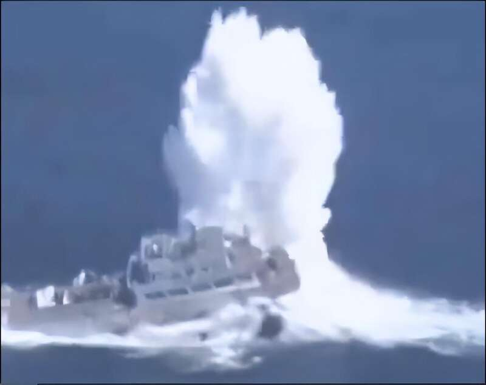
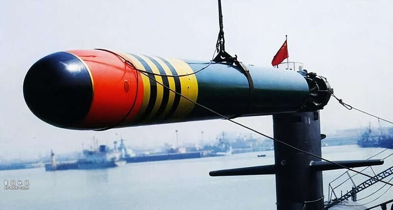
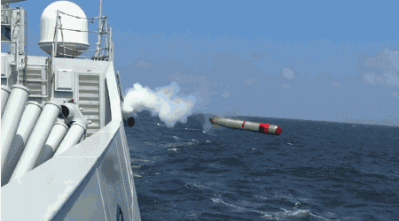
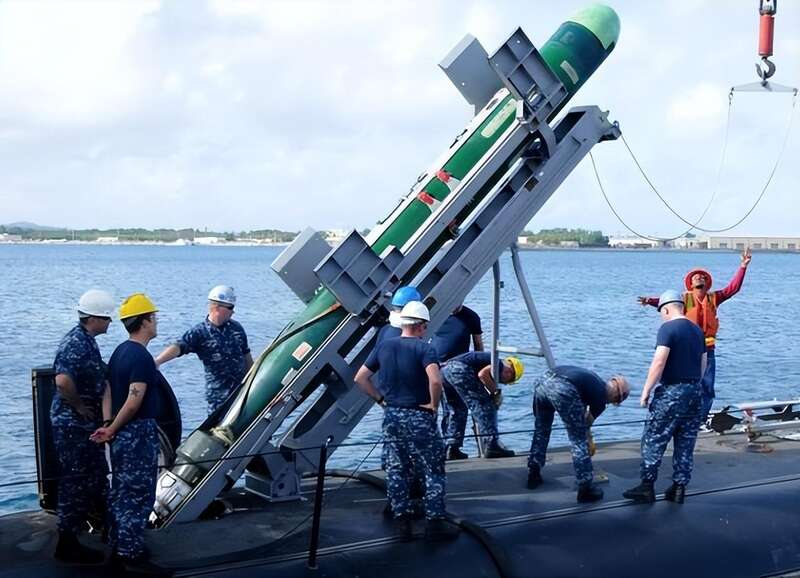
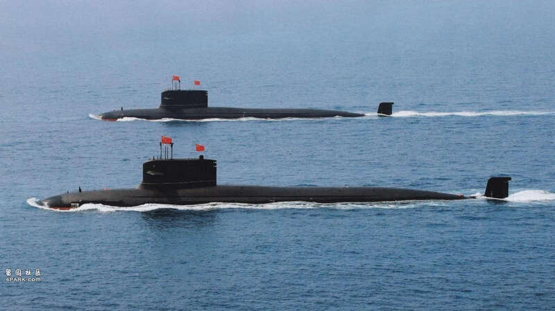

日前，香港《南华早报》及印度《欧亚时报》等多家境外媒体，对央视近期播出的视频进行分析，认定解放军海军的039B型潜水艇，在演习中使用了新一代的鱼-10鱼雷击沉了一艘靶舰。这艘被击沉的靶舰是一艘退役的074型两栖登陆舰。视频显示在被鱼雷击中时，该舰的舰尾随着震荡波露出了水面，爆炸还激起了近百米高的水柱，可见鱼-10的威力不凡。

（图为鱼-10击中靶舰的瞬间）
这段影片是中国庆祝海军潜艇部队成立70周年纪录片的一部分，按照惯例并未公布鱼-10的具体规格。但《兵工科技》杂志分析称，这枚鱼雷大概率就是中国研制、在2015年服役的鱼-10鱼雷。《兵工科技》还评论称，从央视公布的影片来看，这种鱼雷的威力使得航母也难逃沉没的命运。更不用说排水量更少的驱逐舰及船坞登陆舰了。即便未能击沉，基本上也会丧失战斗力。

（鱼雷是我国潜艇部队的标配利器）
另外根据鱼雷在水下航行的状况来看，鱼-10配备了先进的“艉迹归向技术”。也就是说可以根据目标船只产生的艉迹，校准鱼雷的航向。使其犹如水下的导弹一般，大大提升了打击精度。而根据此前外媒披露的资料，除了艉流探测技术之外，鱼-10还可以使用远程光纤制导，根据潜艇的指示调整运行方向。两种制导方式相结合，使得目标一旦被鱼10锁定，就很难摆脱其攻击。此外，鱼-10还采用了聚能设计，使其可以有效对付防护较好的大型舰艇。对付航母更是能有效贯穿船体，破坏内部的关键设备，使其沉没或者丧失战斗力。

（鱼雷发射瞬间）
鱼雷这种经典的海战武器，虽然在二战之后逐渐式微。但却拥有着隐蔽性好，抗干扰能力强等特点。再加上可以对目标船体的水线以下部位发动攻击，容易造成漏水及沉没，所以破坏力也很强。相较而言反舰导弹，数枚都未必能击沉一艘航母，可见鱼雷这种经典武器的地位是难以撼动的。尤其是配合水下的潜艇，可以隐蔽地对目标发动攻击，历史上被鱼雷击沉的舰船数不胜数。

（图为美国的MK48型鱼雷）
鱼-10是中国对标美制MK-48Mod7型鱼雷所研制的，据估计其射程可以达到50公里，航速也可以达到50节以上。并且这款鱼雷已经广泛装备中国海军的潜水艇，而这次视频中出现的发射平台，很可能就是已经量产17艘的093B型潜艇。相较水面舰艇而言，潜艇难以被侦测。紧张时刻可以部署在关键海域，对敌方的舰艇进行有效拦阻。

（潜艇可以有效拒止美军）
平时就可以部署在第一岛链的几个关键海峡，战时则可以前出西太平洋，拒止美国海军介入台海及南海。当下央视罕见揭露鱼-10的发射画面，很可能就是在向美国发出强硬讯号。